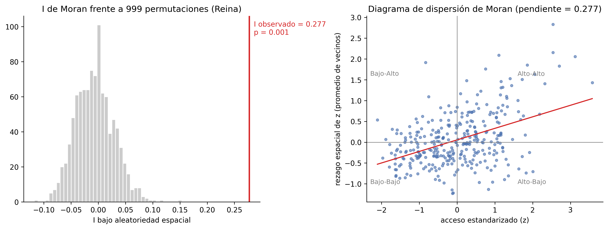
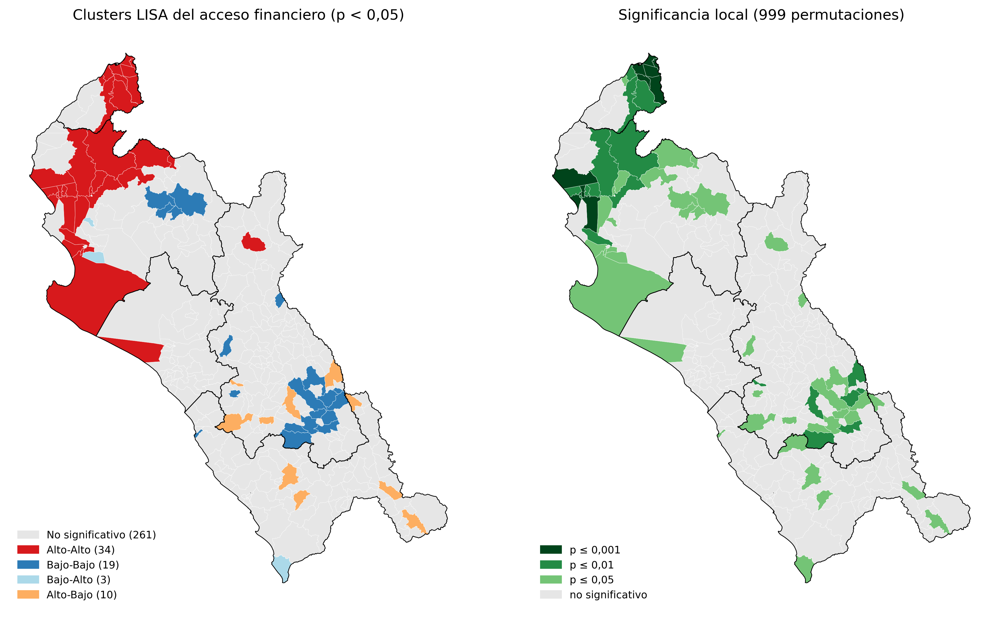

Fase 1 · Datos de Áreas
Análisis Exploratorio de Datos Espaciales (AEDE) y Autocorrelación
Moran Global: I = 0.540 (p < 0.001)
Se evaluó la tasa de puntos de atención por cada 10,000 adultos sobre la matriz de contigüidad Reina de primer orden (\(W\)). El contraste confirma una autocorrelación espacial positiva estadísticamente significativa. El análisis local LISA evidencia aglomeraciones Alto-Alto (Hotspots) en el eje costero urbano (Trujillo–Chiclayo–Piura) en contraste con agrupamientos Bajo-Bajo (Coldspots) en las cuencas altoandinas de Cajamarca y las provincias serranas de Piura (Huancabamba y Ayabaca).

Diagrama de Moran Global
Variable: Puntos / 10k adultos (W Reina 1)
Insight Clave
Dependencia espacial confirmada (\(I = 0.540\)). La distribución de corresponsales y agencias responde a factores territoriales estructurados, no a un proceso aleatorio.

Clusters Locales LISA (Anselin)
Significancia pseudo p < 0.05 (999 perm.)
Insight Clave
Dicotomía costa-sierra: Los distritos costeros gozan de sinergias positivas de oferta (Hotspots), mientras la sierra de Cajamarca y Piura sufre trampas de baja cobertura (Coldspots).